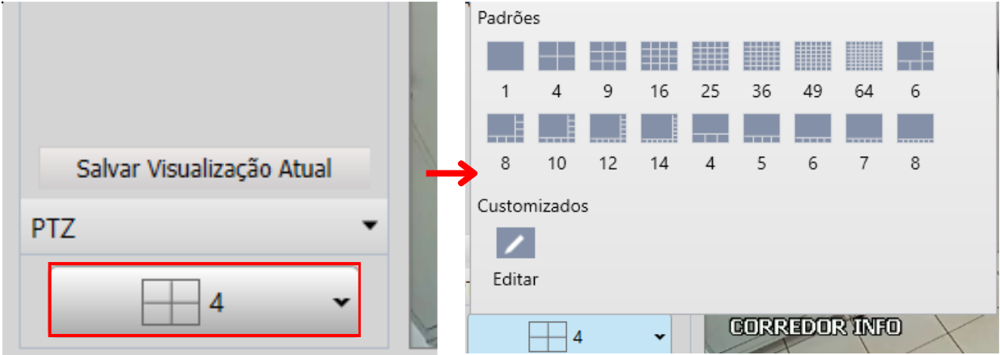
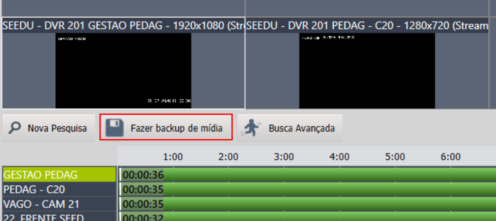
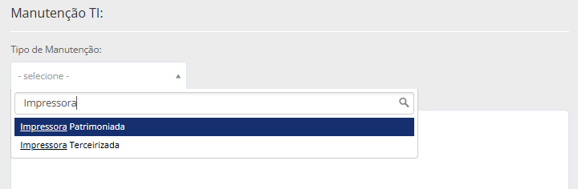
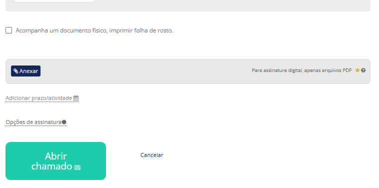

Siga este guia para instalar a impressora nos computadores da escola.
• Verifique se a impressora está ligada na tomada.
• Conecte o cabo USB no computador OU o cabo de rede na impressora
Início e Acordos
Ao abrir o instalador, clique em "Avançar" na tela de boas-vindas.
Na tela seguinte, marque as duas caixas de seleção para aceitar o contrato de licença e as configurações de coleta de dados. Clique em Avançar.

Tipo de Conexão
Selecione o tipo de conexão desejada:
• Conexão USB: Se o cabo estiver ligado direto no PC.
• Conexão de rede (Recomendado): Se a impressora estiver ligada no cabo de internet

Configuração de Rede
Selecione: "Não, a impressora já está conectada à minha rede."

Selecionar a Impressora
O sistema irá buscar as impressoras. Selecione a impressora que aparecer na lista ex: Pedagógico, Gestão.

Softwares e Drivers
Mantenha a seleção recomendada (Driver da impressora e Driver de digitalização marcados) e clique em Avançar.

Conclusão
Aguarde a barra de instalação encher. Ao final, você pode desmarcar a opção de imprimir página de teste para economizar papel e clicar em Concluir.


Câmeras: Visualização ao Vivo
Aprenda a acessar as câmeras em tempo real, organizar a quantidade de telas e salvar sua visualização favorita no Intelbras SIM Next.
Abrir a aba de Visualização
Na tela inicial do SIM Next, clique no ícone Visualização. Uma nova aba será aberta com a tela dividida.

Selecionar e Abrir as Câmeras
No menu lateral esquerdo, chamado Dispositivos, você verá a lista de DVRs (os aparelhos que gravam as imagens da escola).

1. Clique no ícone de "+" ao lado do nome do DVR (ex: SEEDU - DVR 201) para expandir a lista de câmeras.
2. Para abrir, basta clicar e arrastar o nome da câmera para o quadrado vazio no centro da tela, ou dar um duplo clique no nome dela.

Escolher a Grade (Quantidade de Câmeras)
No canto inferior esquerdo da tela, você verá um ícone de grade (geralmente marcado com o número 4). Clique nele para escolher quantas câmeras deseja ver ao mesmo tempo.

Salvar Visualização (Opcional)
Se você organizou suas 16 câmeras favoritas e não quer ter que arrastar uma por uma todo dia, clique no botão Salvar Visualização Atual (fica no canto inferior esquerdo). Você poderá dar um nome (ex: "Câmeras Pátio") e abri-las com um clique no dia seguinte!

Câmeras: Buscar e Exportar Gravações
Aprenda a resgatar imagens de dias anteriores, pesquisar por horários específicos e exportar os vídeos do Intelbras SIM Next diretamente para o seu computador.
Abrir a aba de Reprodução
Na tela inicial do SIM Next, clique no ícone Reprodução.

Pesquisar a Gravação
Uma janela chamada "Buscar Gravação" vai aparecer. Siga passos :
1. Selecione as câmeras:. Marque a caixa de seleção (▢) ao lado do nome do DVR para buscar imagens de todas as câmeras. Caso queira uma câmera específica, clique no ícone de "+" para expandir a lista e selecione apenas a câmera desejada.
2. Defina o período:. Clique nos campos de "Horário de início" e "Horário final" para abrir o calendário e definir a data e a hora exata que você deseja assistir

Os dias destacados em verde no calendário possuem gravações disponíveis. O limite de armazenamento varia conforme a capacidade do equipamento:
- DVR de 16 câmeras: armazena as imagens por aproximadamente 32 dias.
- DVR de 32 câmeras: armazena as imagens por aproximadamente 15 dias.

Linha do Tempo e Backup
Para salvar o vídeo,com a câmera selecionada clique no botão Fazer backup de mídia.
Hora Inicial e Hora Final
Na janelinha que abrir, ajuste a "Hora Inicial" e a "Hora Final" do corte exato que você deseja salvar. Em seguida, clique em Baixar.

Exportar o Vídeo para o PC
Volte na tela inicial do SIM Next (aba Nova Aba) e clique em Mídia.

Acessando a aba Vídeos, você poderá visualizar todas as gravações baixadas. Utilizando os ícones localizados abaixo de cada arquivo, é possível realizar as seguintes ações:
- Renomear: Altera o nome do arquivo para facilitar a identificação.
- Exportar: Salva a gravação em outra pasta do seu computador (Área de Trabalho, Pen Drive, etc).
- Abrir local: Abre a pasta do sistema onde o arquivo original está guardado.


Solicitação de Toner / Tinta
Acessar SistemaPasso a passo para solicitar recarga de refil ou toner via 1Doc.
Iniciar Chamado
No menu superior, clique em Novo e selecione a opção Chamado técnico.

Selecionar Assunto
No campo Assunto, digite "SEEDU" ou procure por:
SEEDU :: Chamado Técnico TI.

Identificação
- Unidade Escolar / Setor *: Selecione sua escola na lista (Obrigatório).
- Solicitante: Campo opcional. Preencha apenas se estiver abrindo pedido para outra pessoa.

Tipo de Manutenção
Selecione se a impressora é Patrimoniada (da Prefeitura) ou Terceirizada (Alugada/Locada).
Impressora Patrimoniada
Complete os campos:
•*Patrimônio: Digite o número da plaqueta.
•*Marca/Modelo: Se não souber, escolha "Outro" e digite abaixo.
•*Tipo: Selecione "Solicitação de Toner ou Refil de Tinta".

Para o "Refil de Tinta" marque as cores que deseja:

Impressora Terceirizada
Preencha o campo Número de Série conforme a etiqueta do equipamento. Para concluir o chamado, siga as mesmas instruções descritas no Passo 5.

Anexo Obrigatório
Para finalizar, clique em
Manuntenção de Impressoras
Acessar SistemaPasso a passo para solicitar manutenção de impressora Patrimoniada ou Terceirizada via 1Doc.
Iniciar Chamado
No menu superior, clique em Novo e selecione a opção Chamado técnico.

Selecionar Assunto
No campo Assunto, digite "SEEDU" ou procure por:
SEEDU :: Chamado Técnico TI.

Identificação
- Unidade Escolar / Setor *: Selecione sua escola na lista (Obrigatório).
- Solicitante: Campo opcional. Preencha apenas se estiver abrindo pedido para outra pessoa.

Tipo de Manutenção
Selecione se a impressora é Patrimoniada (da Prefeitura) ou Terceirizada (Alugada/Locada).

Impressora Patrimoniada
Complete os campos:
•*Patrimônio: Digite o número da plaqueta.
•*Marca/Modelo: Se não souber, escolha "Outro" e digite abaixo.
•*Tipo: Selecione "Manutenção".

No campo Solicitação, problema ou correção, seja o mais claro e detalhado possível. Uma boa descrição ajuda a equipe técnica a resolver o seu chamado muito mais rápido!

Impressora Terceirizada
Preencha o campo Número de Série conforme a etiqueta do equipamento. Para concluir o chamado, siga as mesmas instruções descritas no Passo 5.

Anexo Obrigatório
Para finalizar, clique em

Computador e Rede
Acessar SistemaPasso a passo para manutenção de Computadores ou Internet via 1Doc.